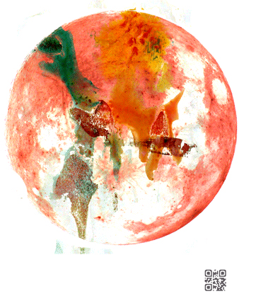

Technique mixte : Aquarelle/scanographie/animation 3d/qrcode/audio
Démarche : Transnumériser les tâches de peinture aquarelle! Absorption sur papier puis scan sur le vif. Utilisation de la texture fraîchement numérisée... puis animation 3d et composition de la boucle sonore en résonance ! L'intention est de conserver la fraîcheur du processus créatif... rechercher une fluidité créative... une présence, au-delà du support aquarelle et numérique. La démarche cherche à construire un mouvement infini, un instant d'éternité.
Transnumerize watercolor painting tasks! Absorption on paper then scan on the spot. Using the freshly scanned texture ... then 3d animation and composition of the sound loop in resonance! The intention is to preserve the freshness of the creative process ... to seek a creative fluidity ... a presence, beyond the watercolor and digital support. The process seeks to build an infinite movement, a moment of eternity.
Les tableaux sont à la fois réels et virtuels (format 20*30). Ils sont réalisés sur chassi entoilé et intégrent un qrcode (et une puce nfc sans contact) qui renvoit (une fois scanné avec votre smartphone) vers l'animation en ligne.
Transnumérisation de nos cellules imaginaires !
lien vers l'animation Cell#1 : aïkualun
lien vers l'animation Cell#1 : aïkualun
Cell#2
Cell#3
Cell#4
Cell#5
Cell#6
Cell#7
Cell#8
Cell#9
Cell#10